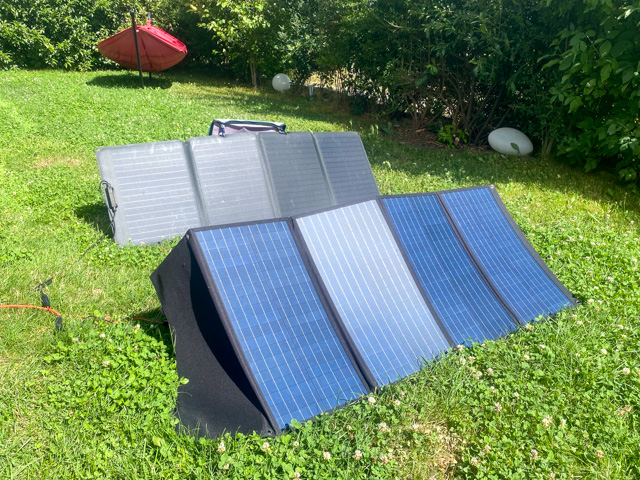
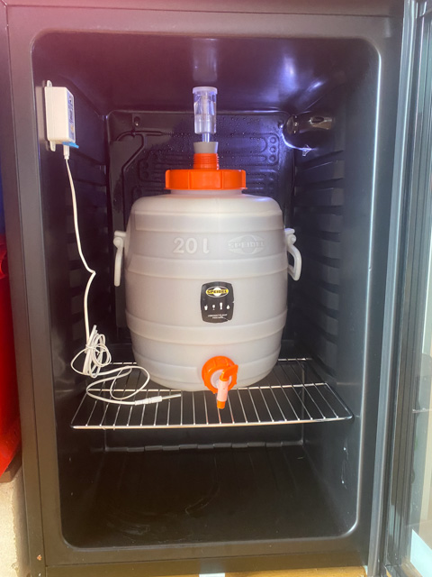
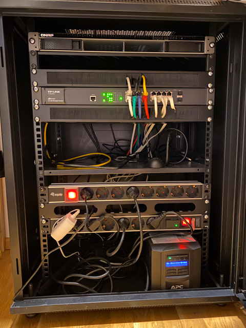
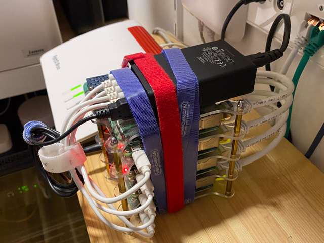

Regenbogenreich
Rechenzentrum
Aktuell wird der RegenbogenReich-Server dazu genutzt, den Ertrag der Solaranlage auszuwerten. Ebenfalls werden die Brau- und Gärtemperaturen von Bärbel Bräu erfasst. Aktuelle Werte könnt ihr unten in den Anzeigen sehen. Diese sind aktuell! :-)
Solltet ihr weitere Ideen habe oder Projekte, welche Server und Rechenleistungen benötigen, immer raus damit. :-)
RegenbogenReich Solar
Aktuelle Ernteleistung der Solaranlage (260 Wp)
Link zum Dashboard: Dashboard
Bärbel Bräu
Aktuelle Temperaturen im Gärkühlschrank, sowie der Stammwürzegehalt des Sudes:
Link zum Dashboard: Dashboard
Rechenzentrum
Für die Datensammlung, Verarbeitung und Darstellung werden verschiedene Serives genutzt. Es sind auch unterschiedliche Rechner oder Server im Einsatz.Regenbogenreich.eu - WAN/Internet
Der Server ist ein virtueller Server. Dieser ist von der Firma Hosting.de in Aachen gemietet. Er steht auch in Aachen und ist direkt an das Internet angebunden. Dies erlaubt eine feste Internetadresse und somit eine Benutzung von Domain-Namen wie "regenbogenreich.eu". Der Server ist rund um die Uhr und auf der ganzen Welt (WAN/Internet) erreichbar und steht in einem großen Rechenzentrum, ähnlich wie in dem Bild (Symbolfoto).Die Tabelle zeigt die Spezifikation des virtuellen Servers. Nicht sehr toll ausgestattet, aber dafür günstig. :-)
Dennoch: Fixe X64-Architektur und Top-Anbindung ans Internet machen den Server zu einem flinken Gesellen.
| Name | Rechenkerne | Architektur | Arbeitsspeicher | Festspeicher | Anwendungen |
|---|---|---|---|---|---|
| vHost RegenbogenReich.eu | 1 | x64 | 1 GB | 20 GB | Internet, Homepage, Minecraft, Docker |
baerbel - LAN
"baerbel" ist der Rechnerknecht und das Datenarchiv schlechthin. Hier lagern vor allem alle Bilder und Videos, sowie alles was viel Speicher benötigt. baerbel ist nicht aus dem Internet erreichbar, damit Hacker kein Unwesen mit den wichtigen Daten treiben können. baerbel hängt direkt am Hausnetz (LAN) und ist durch eine unterbrechungsfreie Stromversorgung vor Stromausfall geschützt.Viel Leistung verbraucht allerdings auch viel elektrische Energie. Daher läuft der Server nicht rund um die Uhr, sondern nur bei Bedarf.

| Name | Rechenkerne | Architektur | Arbeitsspeicher | Festspeicher | Bemerkung |
|---|---|---|---|---|---|
| baerbel | 4 | x64 | 16 GB | 20 TB | Datenarchiv, Video-Streaming, Audio-Streaming |
littleBaerbel - LAN
"littleBaerbel" ist eigentlich ein Cluster. Ein Cluster ist eine Ansammlung von Rechnern, auch Rechnerverbund genannt. "littleBaerbel" vereint 4 Raspberry-Pi Mini-Computer verschiedener Generationen zu einem Verbund. Raspberry Pis sind kleine Rechenzwerge, welche vergleichsweise wenig Energie verbrauchen und dennoch eine ordentliche Leistung haben. Die Recheneinheiten basieren auf der ARM Architektur, welche auch sehr häufig in Handys zum Einsatz kommt. Im Gegensatz zur x86/x64 Intel Architektur von Personal Computern oder aktuellen Spielekonsolen ist sie auf Engergieffizienz und nicht auf Rechenleistung optimiert. Daher kleine Bärbel. :-)Der Cluster wird genutzt zur Steuerung der Smarthome-Geräte. Z.B. werden Informationen wie die aktuelle Leistung der Solaranlage werden zusammen getragen und an "RegenbogenReich.eu" gesendet. Außerdem dient der Cluster dazu, Erfahrungen in der Rechner- und Anwendungen-Orchestrierung zu sammeln. Der Cluster ist ebenfalls nicht vom Internet aus direkt erreichbar.

| Name | Rechenkerne | Architektur | Arbeitsspeicher | Festspeicher | Bemerkung |
|---|---|---|---|---|---|
| littleBaerbelMaster | 4 | ARMv8 - Raspi4 | 4 GB | 128 GB | Kubernetes, Ansible, ioBroker, MQTT |
| littleBaerbelSlv1 | 4 | ARMv8 - Raspi3 | 1 GB | 64 GB | Kubernetes, MQTT |
| littleBaerbelSlv2 | 4 | ARMv7 - Raspi2 | 1 GB | 64 GB | Kubernetes, MQTT |
| littleBaerbelSlv3 | 4 | ARMv7 - Raspi2 | 1 GB | 64 GB | Kubernetes, MQTT |
Services and Applikationen
Hier kommt eine Liste mit den Name der Services, eine kurze Erklärung und wenn vorhanden, ein Link zu dem Webfrontend auf dem RegenbogenReich-Server.| Service | Name der SW | Erklärung | Link |
|---|---|---|---|
| Webserver | Apache | Darstellung von Homepages | https://regenbogenreich.eu |
| Gaming | Minecraft | Minecraft spielen | |
| Daten Broker | Mosquitto | Verteilen von MQTT-Messages für das Internet of Things | |
| Entwicklung | Node-RED | Grafisches Entwicklungswerkzeug für das Internet der Dinge | http://regenbogenreich.eu:1880 |
| Datenbank | InfluxDB | Zeitreihen Datenbankmanagementsystem | http://regenbogenreich.eu:8086 |
| Datenvisualisierung | Grafana | Anwendung zur Datenvisualiserung | http://regenbogenreich.eu:3000 |
| Streaming | Icecast2 | Streaming-Server zur Übertragung von Multimedia-Daten. | http://regenbogenreich.eu:8000 |